Activity: Relating a single face with a rigid select set
Learn how to use the Coplanar command to apply a relationship to a single face while the select set remains rigid to the single face.
-
Open rigid_set.par.
Align the clevis base (2) at a 10° angle measured from the left upper edge (1). Clevis faces are to maintain their position (rigid) relative to the clevis base.
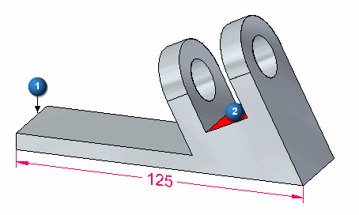
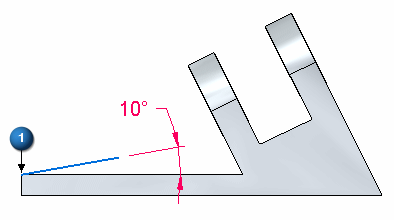
The face created in this step is a construction face.
Select the face shown and click the Copy option on the command bar.
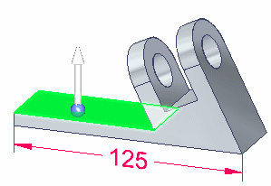
Drag the steering wheel to the edge shown. Rotate the copied face about this edge.
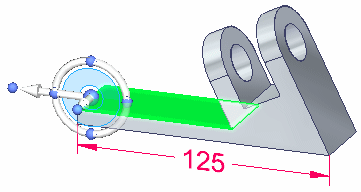
Click the torus on the steering wheel and then type 10 in the dynamic edit box. Press the Enter key.
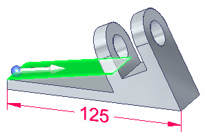
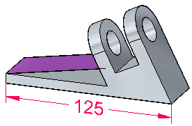
To control the result, we will need to ground two faces.
On the Home tab→Face Relate group, choose the Ground command.
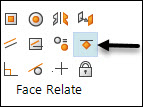
Select the two faces shown and click Accept.
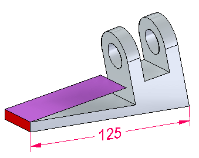
After the synchronous edit, you can remove the two ground relationships in PathFinder.
Select the seed face. This is the face that will have a relationship applied to it. Select the face shown.
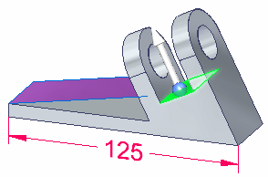
To add faces to a select set, you press the Spacebar. Press the Spacebar and notice
the selection mode symbol next to the cursor  . Faces you select now add to the select set. Place a rectangular fence as shown.
This selects all the faces that are part of the clevis.
. Faces you select now add to the select set. Place a rectangular fence as shown.
This selects all the faces that are part of the clevis.
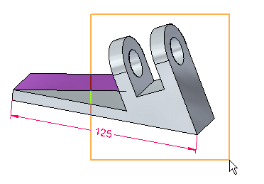
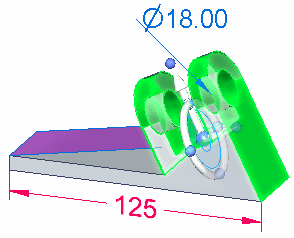
-
On the Home tab→Face Relate group, choose the Coplanar relationship
 command.
command.
The target face is the face copied at the 10° angle. Selecting this target face makes the seed face coincident with it.
Select the target face.
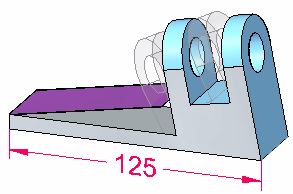
On the command bar, click the Accept button .
Double-click to end the Coplanar relationship command. Press the Escape key to clear the select set.
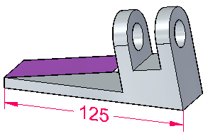
Notice that with the Persist option on, a coplanar relationship between the seed face and the target face (the copied rotated face) is in the Relationships collector.
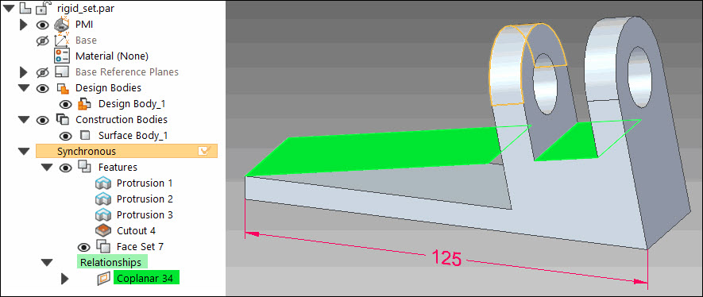
To verify the alignment, go to the front view by pressing Ctrl+F.
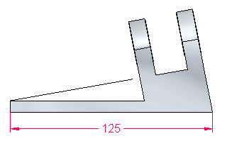
In PathFinder, click the Show/Hide icon for the copied face. This turns off the display.
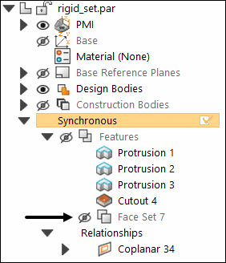
This completes the activity.
In this activity you learned how to use a Relate command to apply a coplanar relationship between two faces. You also learned how to include other faces in the relate operation.
-
Close the file and do not save.
-
Click the Close button in the upper-right corner of the activity window.